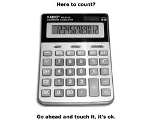
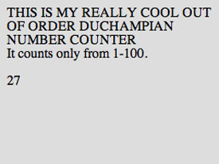
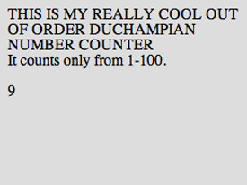
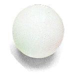
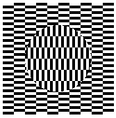

nude
Marcel Duchamp is perhaps best remembered in this class for his Nude Descending Staircase (no. 2). What struck me the most was how much this piece had affected this class. While writing this paper, I counted no less than 20 instances of things descending in true Duchampian cubist style. However striking, Duchamp's nude is only a subset of a larger portfolio intent on challenging the artistic community.
Grounded in a world of presentational art, the community Duchamp
was challenging expected to be able to project meaning
[krauss
81] on to most art. However, Duchamp's readymades thwarted
the art community's attempts to do just that. Typically lacking
anything beyond a signature, the readymade ushers in a new type of
art that transcends his Nude Descending a Staircase (no. 2)
in almost every way.
pre-fab
Lihua's counting is an example of a readymade. Instead of making the problem accessible to the viewer, she has presented him with a calculator. She invites him to touch it, use it, perhaps even count with it. While there is an easily formed connection to the calculator and the thesis of the assignment, the calculator does not literally answer the assignment.
In their most literal sense, the readymades transferred generic objects from the realm of the mundane into the world of the artistic [krauss 72]. Such an example is Duchamp's In Advance of a Broken Arm, a lone shovel. That Duchamp had the insight to do this is astounding in its own right, but does not explain the motivation present behind the readymades.
In part, Duchamp selected pre-fabricated items because they lacked any of his own influence. No person would be able to say that the craftsmanship of the shovel in Broken Arm was influenced by Duchamp's prevailing artistic beliefs because it was not made by him at all. Duchamp's contributions to the piece are strictly external to the piece rendering the interpretation at a different level entirely.
There is something very critical about the readymades. Their power
is derived solely from the personal interaction that people have with
them. Lihua's calculator can be powerful if we can relate to it and
pretend to understand its significance. Once we believe that we know
how the calculator relates to the assignment, we have formed the
final connection that makes it tangible and we feel that we
understand it in a context. But then we are left wondering, as we
might have when we first saw the calculator, why this
calculator?
There is no definite raison to the
readymades except their presence. Banham notes
The subject-matter becomes, without any transformation or qualification, the object presented for the public to view—the shocking effect it had was less concerned with iconography... than with the elimination of too many stages of the tradition process: subject-artist-painting-public. [banham 204]
That is, the readymades have a power to transcend their own
aesthetic because they lack the influence of their presenter.
Duchamp's contribution to the art is that he had the presence of mind
to place it there, but the transformation and qualification
is
provided solely by the viewer. By choosing objects that are devoid of
his own influence, Duchamp empowers the viewer, making him an active
participant.
subversion
 Alan Cohen presents his counting to 100 by random process. The page forcefully reloads and counts to 100, but non-sequentially. Alan has not only removed from the viewer control, but he has enforced a process on him. While Cohen is responsible for the process, he never directly affects the presentation that is viewed.
Despite the fact that the viewer will see all 100 numbers (eventually), Cohen has removed himself from the means of presentation. The randomization is purely dependent on the viewer, but the piece remains. The viewer cannot assert that Cohen intended him to see a specific ordering of numbers, but Cohen can be assured that the viewer has been exposed to them. Cohen does not take responsibility for the details of the presentation but instead presents the material in a way that is devoid of its original context. The viewer must assert a reason behind the piece.
Duchamp does more than empower the viewer, he co-opts him by making him responsible for understanding the reason and then motivation behind each piece. This motivation is not only subversive but it transcends even the radical nature of cubism and otherwise representational futurism. Krauss notes that Duchamp
raise[s] questsions about what exactly is the nature of the work in the termwork of art... a work might not be a physical object but rather a question, [krauss 73]
It is then, this subversion that gives power to his pieces. While
Duchamp revels in the opacity
of Raymond Roussel's mechanized
production method [krauss 76], so he delights in the opacity of his
own method. Duchamp, speaking of Roussel says What mattered, was
an attitude, more than an influence, to know how he had done all that
and why...
Duchamp has asserted his own attitudes via the
readymades while destroying the concept of influence that he may have
otherwise inserted in his own work. Duchamp's reasons may be known,
but his influence is notably absent because
the work is deprived of its conventional source of meaning...the mechanization of the art act becomes a barrier to this conventional right of access.
Frustration
 Erik Fogg takes the role of Brancusi in his Duchampian counting.
Fogg's subversion is more direct. He has told the viewer what to
observe, even what elements he finds worth noting, but in the end,
it is a contemplation that is as unreceptive to analysis as the
polished marble...
Indeed, we could observe one hundred or one
thousand of these balls and arrive nowhere beyond where we were at
the beginning. Fogg's exposition of this is by no means unique, Timan
Goshit's problem number five offers the same obscurity. We are
offered a Duchamp-style optical illusion one hundred times but each
time we are left with the same result as if we had only seen one.
Like Duchamp's readymades, Erik and Timan's works provide the illusion of cohesion on first glance. They appear to fulfill the requirement originally posed of them, but they frustrate the viewer because they do not provide a particularly tangible way to understand them. The viewer's analysis is thus turned to the essence of why he feels the pieces are worthy of attention, but this loop may be cyclical at best and at worst offer no more insight than that he initially possessed.
The power that Duchamp wields is his obsession with the
question of what it is that makes a 'work' of art.
And indeed,
that is part of the power that is evident in the works of the
students in the class. Duchamp had the ability or perhaps audacity to
disregard
the notion that there must be an intimate, casual connection between an individual and what he makes. [krauss 71]